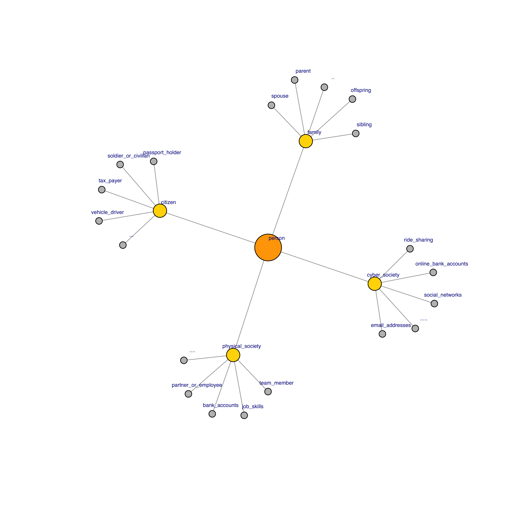
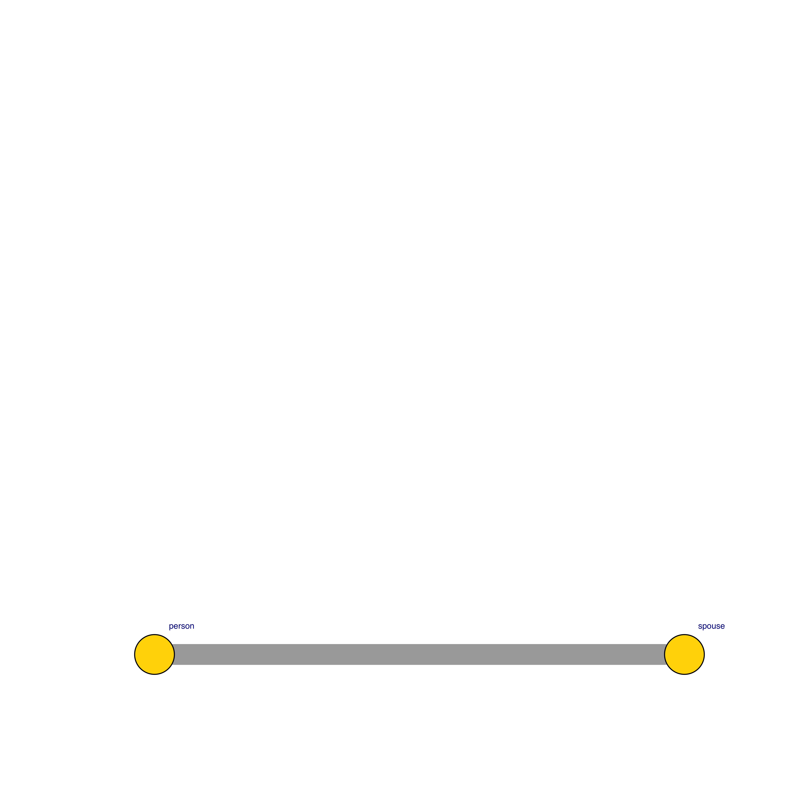
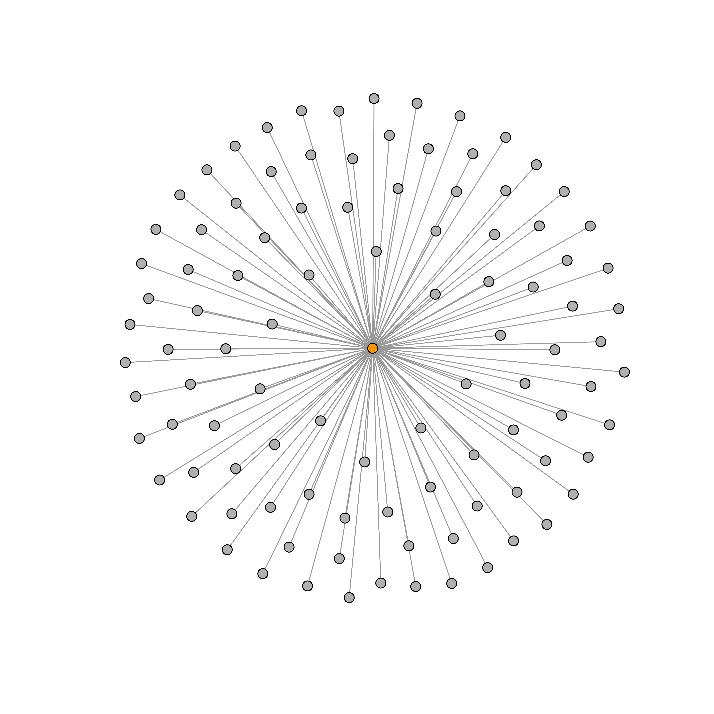
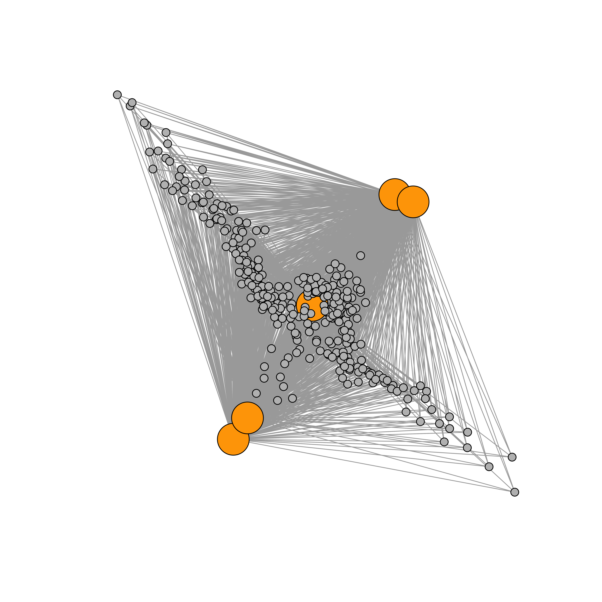

Blockchain, cryptography, cryptocurrencies
Topic: An exploration
Contact info:
- Twitter: @darpanbiswas
Key Topics
| Philosophical: | why is it a revolutionary idea |
| Scientific: | algorithms, CS , and math |
| Commerce: | changes to industry |
| Capital: | risk / reward and asset allocation |
| Infrastructure: | code, servers, data centers, etc. |
Philosophical
Motivation
Who is anyone......
......to someone else?
As a family member
- Parent
- Spouse
- Offspring
- Sibling
- ....
As a citizen
- Tax payer
- Passport holder
- Vehicle driver
- Serviceman or civilian
- ....
As a part of traditional society
- Team member
- Partner or employee
- Full time or part time
- Bank account holder
- ....
As an internet user
- Email address(es)
- Social network account(s)
- Online bank accounts
- Online credit ratings
- ....
Thinking about this visually
Information and power
- Intermediaries derisk our interactions / transactions
- We expend our capital and provide our information
- In return we receive a service
- Implictly, we expect that the providers will not draw value out of the information
- This is unenforceable
- So it's merely trust
Closest relationships
Transactional relationships
Informational advantage in transactional relationships
Informational advantage in transactional relationships

To continue to transact while not trusting one entity to do it requires distribution of trust
Distributed trust systems and society
Science and math
Let's try some solutions given the constraints
- Provide some existing unique id - email, SSN, Twitter id ; doesn't work
- Provide a random number; doesn't work
- Other solutions?
To communicate anonymously, the choices are
- Use some central service provider
- Take the risk that someone will steal it
- Agree on an algorithm before hand, thus encoding the procedure
Sign using a signature algorithm
- You can sign anything
- Emails
- Contracts
- Transactions
- Inputs are:
- A string of symbols i.e. emails, contracts, transactions
- Your secret key to sign the document
- Encrypt using some encryption algorithm.
- Output is:
- A string of symbols (different from the two above)
Recipient validates the message
- Validate using
- Your public key
- The output from last slide
- The actual message
Note that there are different ways of doing this
Remember the credit scoring example
- We haven't discussed the blue square
- That's because the blue square will need to be implemented outside
- All this accomplishes two things
- Broadcasting of transactions i.e. peer to peer; there is NO CENTRAL AUTHORITY
- This goes along with the idea of anonymous identities
- If you think about this for a second, it's unclear whether one can happen without the other
A system of distributed trust
Depending on how you view it, this can have material implications
We stopped needing our...
- Milkman
- Mall retailier
Next up?...
- Banker?
- Capital allocator?